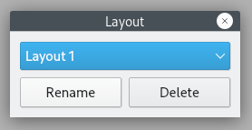

Layout¶
The set of currently opened widgets, their placement, and some properties is grouped into layouts. Cutter will automatically restore the last layout state when reopening Cutter. Last debug and normal layouts are stored separately. You can save multiple named layouts for different use cases. Use View Menu to save, load or Reset to default layout. A named layout is never automatically modified. To modify a previously saved layout, instead of entering a new name, select an existing layout from list in Save Layout dialog.
Layout manager¶
Description: Layout manager allows renaming and deleting saved layouts.
Steps to open: View -> Manage layouts